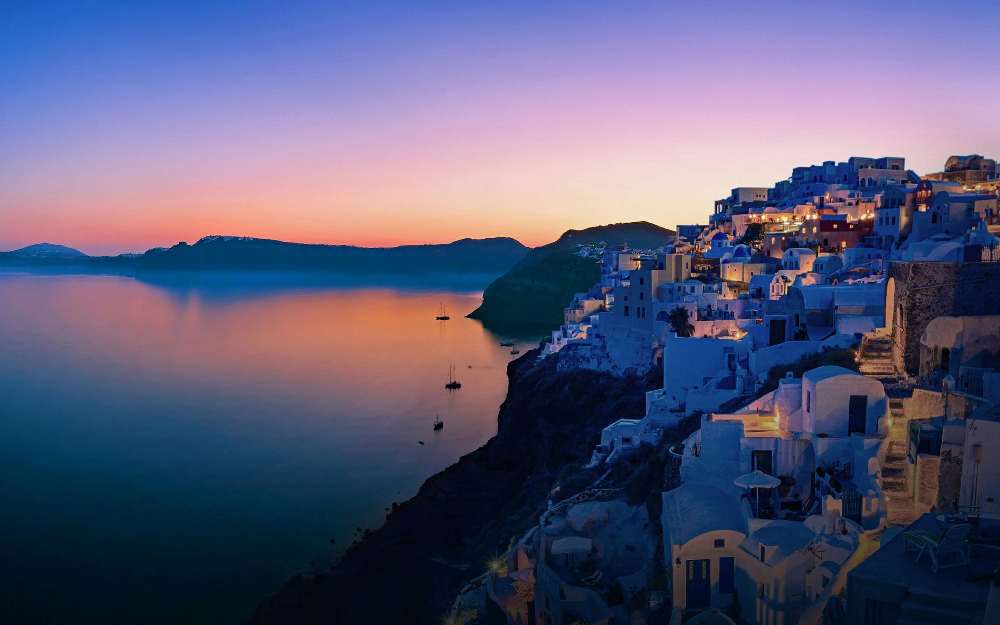

Our Journey: Exploring the World, One Adventure at a Time
Our team of passionate explorers, each with a unique tale woven into the fabric of their adventures, is dedicated to curating extraordinary experiences that transcend the ordinary. Every destination, every corner of the globe, is carefully chosen to resonate with the spirit of adventure that dwells within us.
Our mission goes beyond crafting itineraries; it is about transforming trips into transformative odysseys. We believe in the power of travel to inspire, enlighten, and connect. From the azure waters of hidden islands to the snow-capped peaks of remote mountain ranges, we invite you to join us on a journey that transcends the boundaries of conventional exploration. At TRAVEL, we don't just offer destinations; we offer gateways to the extraordinary.
Why Do You Choose Us
At TRAVEL, choosing us means selecting a travel companion dedicated to turning your wanderlust into a personalized adventure. Our team is driven by a genuine passion for exploration, and we meticulously curate each journey to ensure it exceeds expectations. What sets us apart is not just the destinations we offer but the immersive experiences we craft. We understand that travel is a personal journey, and that's why we strive to connect with our travelers on a deeper level.
What makes us the ideal choice is our dedication to seamless, stress-free travel planning. We recognize that each traveler is unique, and our services reflect this understanding. From expertly designed itineraries to personalized assistance, we prioritize your comfort and preferences. By choosing us, you gain access to a wealth of travel expertise, insider insights, and a network of trusted partners worldwide. Our commitment to excellence extends beyond the journey; it's about building a lasting relationship with our travelers.


Why We Travel: Sharing the Beauty of the World with You
In the essence of "Why We Travel," our mission is to share this passion with you, our cherished fellow wanderers. Each destination we curate, each story we tell, is an invitation to venture beyond borders and immerse yourself in the beauty that graces our globe. Travel, for us, is not a mere escapade; it's a profound commitment to showcasing the richness of cultures, the allure of landscapes, and the warmth of human connections. We choose to share the beauty of the world with you, unveiling the hidden gems, the iconic landmarks, and the untold stories that make every journey an unforgettable chapter in your own travel narrative.
How Traval Agency Works
Travel agencies serve as intermediaries, connecting travelers with tailored experiences. Clients share their preferences, and agencies leverage partnerships with airlines, hotels, and tour operators to curate personalized itineraries. From booking flights to arranging accommodations, these agencies simplify travel logistics, ensuring a seamless journey. By staying updated on travel trends and deals, agencies transform travel dreams into reality, offering a stress-free and enjoyable experience. Their expertise and industry connections make travel planning a breeze, turning aspirations into well-coordinated adventures for their clients.